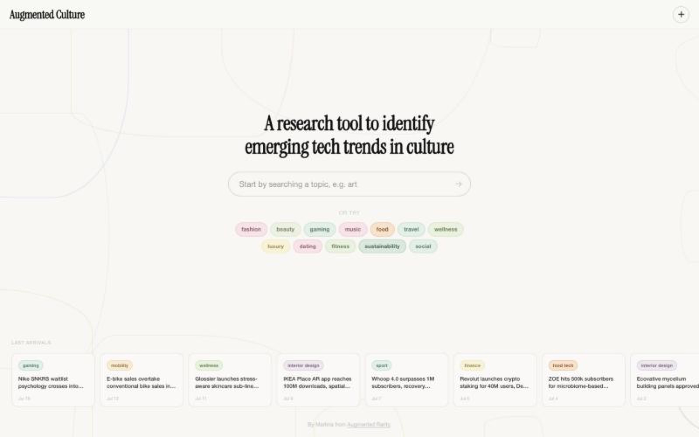
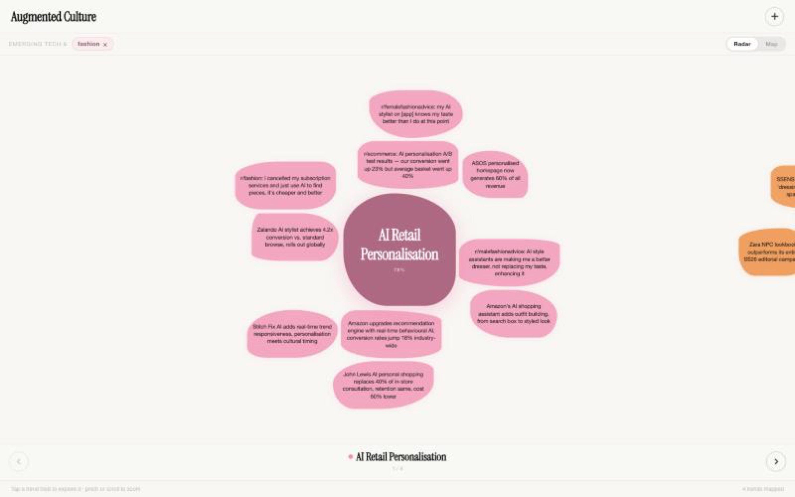

Augmented Culture
A research tool that turns scattered cultural signals, from brand launches to Reddit threads, into emerging trends you can explore by topic.

Outcomes
12
culture topics to explore, from fashion to dating
3
levels of depth: topic, trend, signal
2
views: Radar for trends, Map for human needs
Live
designed, built and shipped
Context
I started this project while doing the Trends & Creative Strategy course at Shifta by Elisava in 2025. The course taught me how trend research works. Doing it by hand showed me how slow and scattered it is.
Trend research is messy. The signals are everywhere: brand launches, industry news, Reddit threads, TikTok. Most trend reports are static PDFs that are out of date the day they're published.
I wanted a tool where you start from a topic you care about and quickly see what's emerging, why it matters, and the evidence behind it.
What I designed
- Search first. One search bar and a set of topic chips, plus a strip of the latest signals so there's always something new to look at.
- Radar view. Each trend is a shape with a relevance score, surrounded by the signals that support it. Industry news sits next to real people's voices from Reddit, so you see both what brands do and how people feel.
- Trend detail. A side panel with a plain-language summary, why it matters, and what brands are already doing.
- Map view. Zooms out from trends to the human needs underneath them, like control, play, style, authenticity and recognition.
The visual language is calm and editorial so dense information stays readable. Topics are colour-coded, and the soft organic shapes say "emerging", not "settled".



What I learned
Feedback from people in strategy was that the drill-down, from topic to trend to signal, mirrors how they actually work. It also showed what's missing before it's ready for clients: some fields aren't filled in yet, sources need clearer attribution, and the relevance scores need to explain themselves.
Those are the next things I'm working on.
Next project
Direct Booking Manager →